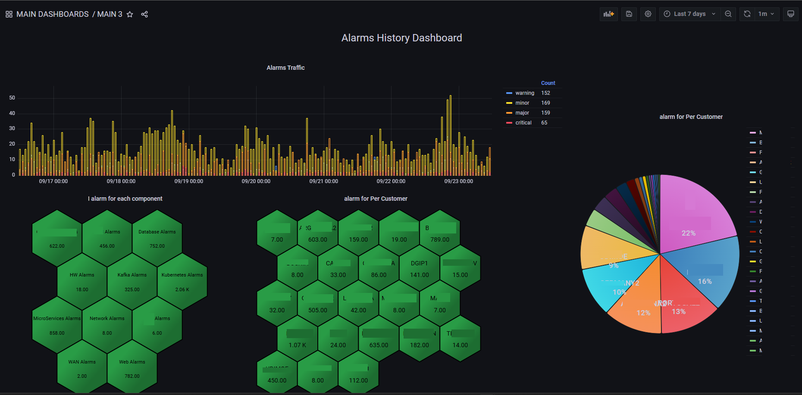
Enterprise Alarm Analytics
Historical alarm trends, severity distribution and breakdowns by customer and technology domain help reveal recurring problems and operational priorities.
Anonymized examples of technical, operational and business dashboards. Select a category or click any image to enlarge it.

Historical alarm trends, severity distribution and breakdowns by customer and technology domain help reveal recurring problems and operational priorities.
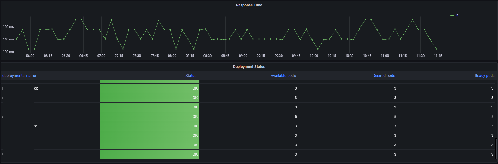
Tracks desired, ready and available pods together with application response time to identify degraded deployments quickly.
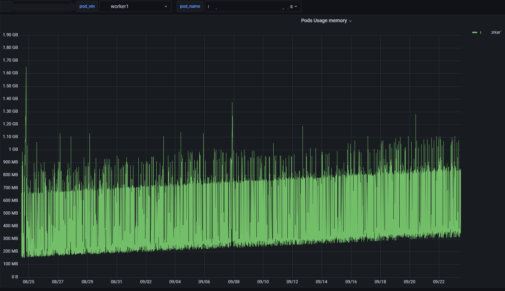
Historical memory baselines, growth and spikes support capacity analysis, memory-leak investigation and limit tuning.
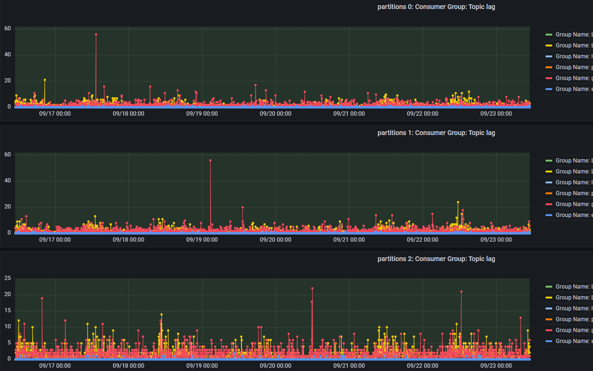
Monitors lag across consumer groups and partitions to detect processing bottlenecks before business-critical data flows are delayed.
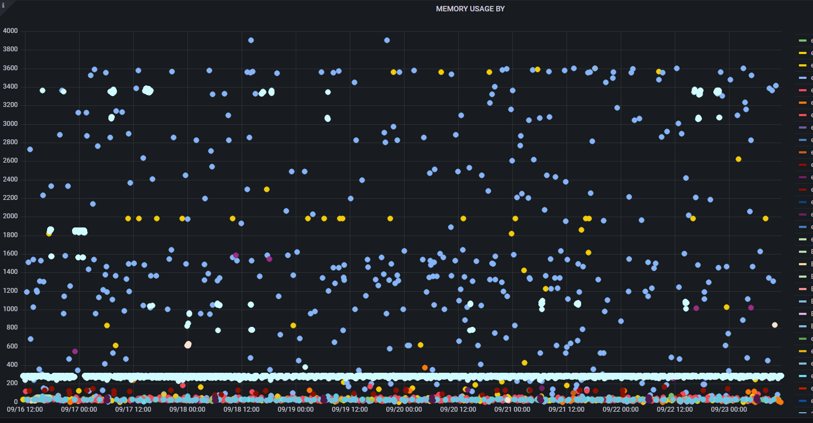
Analyzes memory consumption across database activities to highlight intensive workloads, contention and potential performance bottlenecks.
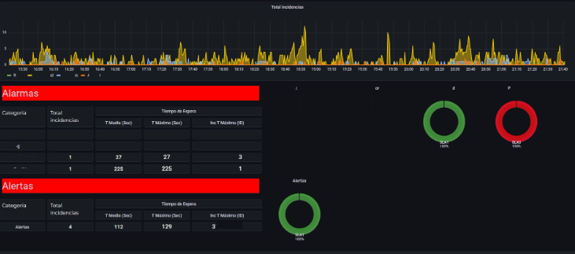
Real-time event volume, waiting time, SLA state and incident distribution give operators a clear view of workload and response performance.
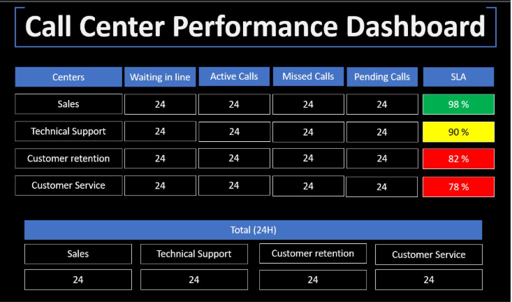
Visualizes waiting, active, missed and pending calls alongside SLA performance across service teams.
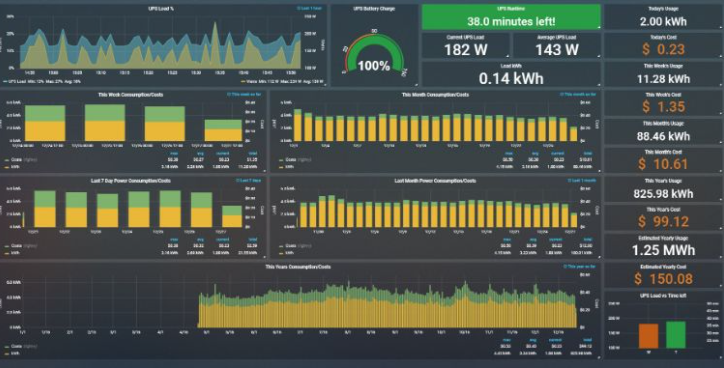
Tracks battery charge, runtime, load, energy consumption and cost for proactive power-continuity management.
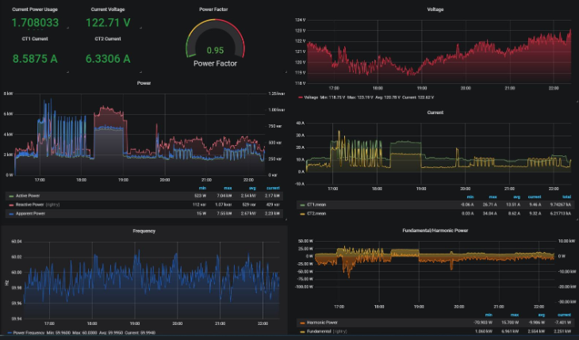
Real-time voltage, current, power factor, frequency and harmonic visibility supports early anomaly detection and capacity analysis.
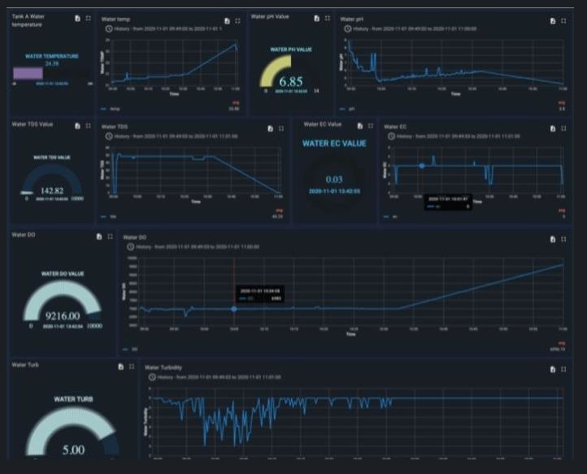
Monitors temperature, pH, TDS, conductivity, dissolved oxygen and turbidity for rapid detection of environmental anomalies.
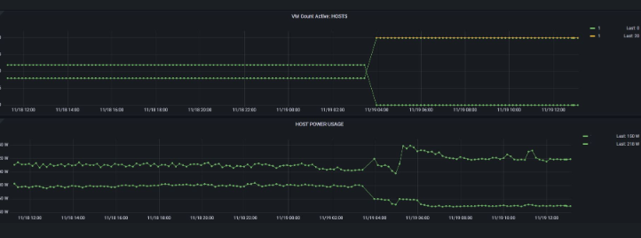
Correlates active virtual-machine count with physical-host power usage to identify consolidation and energy-saving opportunities.
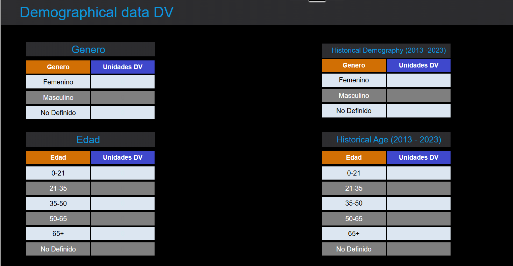
Aggregated demographic and program-duration trends support planning and management decisions without exposing personal information.
The goal is not to display more metrics. It is to show the right context, impact and action to the right audience.